Unannounced Game
Generalist Unity Programmer on a first-person musical decoration game with narrative and cinematic elements.
Click to view Friday Sundae's website.
I am a generalist programmer, currently working on an unannounced game title at Friday Sundae Studio.
I primarily write Systems & Tools for Unity in C#, and also do Engine & Graphics code in C++ as well as Shaders in HLSL/GLSL.
This is my website and portfolio, where you can see some of my past and current personal projects.
Generalist Unity Programmer on a first-person musical decoration game with narrative and cinematic elements.
Click to view Friday Sundae's website.

Unity Developer on client projects and pitches.
Clients include Cartoon Network, the BBC and the British Museum.
Click to view Friday Sundae's website.
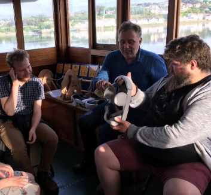
A VR film experience developed for the SS Freshspring Trust and BMT Maritime.
Step back in time and learn about life at sea on the Freshspring.
Click to visit the SS Freshspring website.
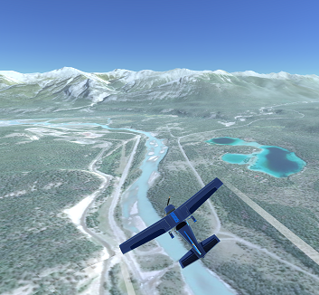
Dynamically streaming OpenStreetMap and NASA data in real-time for a flight simulator.
Click to view a demonstration on Youtube.
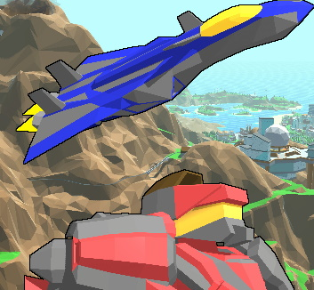
A modern reimagining of Herzog Zwei.
Made with a team of 40+ in Unity.
My roles included bespoke editor tools programming, shader programming, and environment art.
Click to view the trailer on Youtube.
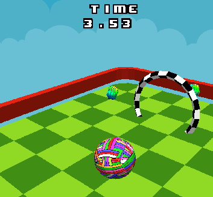
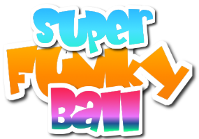
A Monkey Ball clone, built in DirectX 11.
Features a physics engine, data-driven level loading, and a rendering pipeline.
Click to view the project on GitHub.
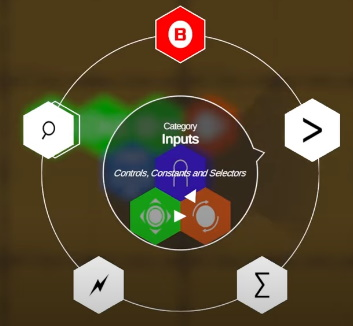
A custom hexagon-based Visual Programming Language, used as a Gameplay Mechanic to teach game programming concepts to non-coders.
Click to view a demonstration on YouTube.
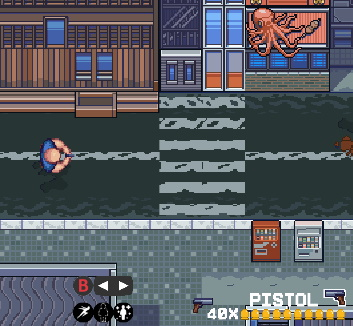
A 4-player multiplayer top-down arena shooter in OpenGL / C++.
My roles included the creation of a data-driven level editor, custom input system, and camera system.
Click to view the project on GitHub.
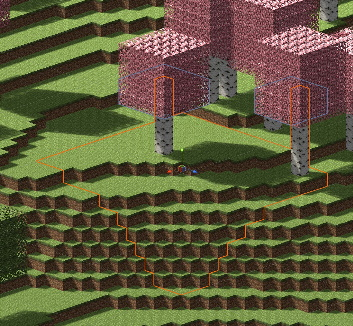
An entirely data-driven voxel terrain generation framework for Unity and Godot.
Click to view the project on GitHub.
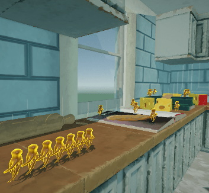
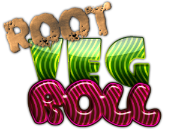
Maniacally roll various root vegetables through a kitchen full of obstacles to escape through the window!
Click to play in your browser on itch.io!
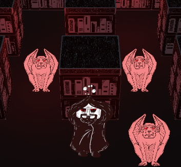
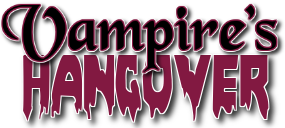
A drunken vampire comes home to all of his hideous pets escaping their cages! Solve puzzles to put them back and get a good day's sleep.
Click to download on itch.io!
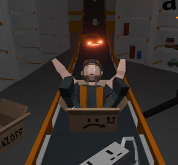
Welcome to the Amazoff Customer Fulfilment Centre! There's been a shift of management, bodies moving in and out, but that's above your paygrade anyway.
Click to download on itch.io!
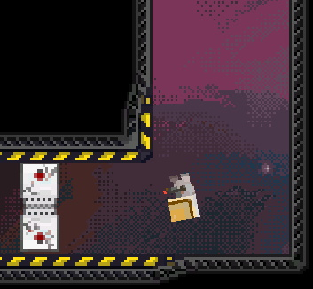
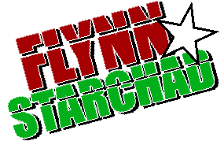
Blast yourself around broken-down spaceships using the recoil of Flynn's Grepair Gun, alternating shots of destruction and repair pellets to fix ships.
Click to download on itch.io!
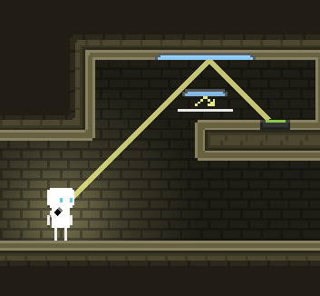
My first released game, made in 4 days with Unity for the Brackeys Game Jam 2018.
Click to download on itch.io!
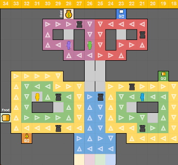
A prototype board game made entirely in Google Sheets.
Click to view the game on Google Sheets.